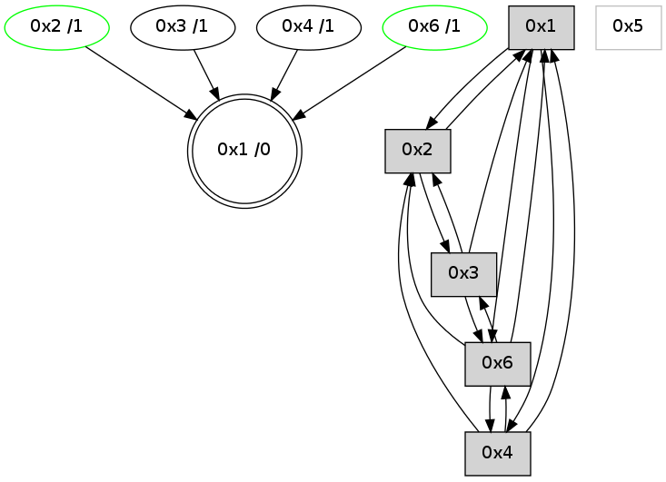

>> << IDX [start] -100 -25 -5 +0 +5 +25 +100 [740.280321121]
 Previous packets
----------------------------------------------------------------------
735.359242 beacon01(adaf) #0 coord=01,02,05,03,04,06 cycle=432.0ms assoc
-- color-indic=0 64 6d c2
735.369202 beacon02(adaf) #0 coord=01,02,05,03,04,06 cycle=432.0ms assoc 64 3c 3d
735.379204 beacon05(adaf) #0 coord=01,02,05,03,04,06 cycle=432.0ms assoc 64 9a 17
735.389205 beacon03(adaf) #0 coord=01,02,05,03,04,06 cycle=432.0ms assoc 64 06 33
735.399204 beacon04(adaf) #0 coord=01,02,05,03,04,06 cycle=432.0ms assoc 64 a0 19
735.409204 beacon06(adaf) #0 coord=01,02,05,03,04,06 cycle=432.0ms assoc 64 d4 05
735.420995 [STC(2)->1 #0.39 stable,to-color d=1]
735.423585 [TreeStatus(2)-.->1 #0.39 stable child=1]
735.424796 [Hello(4): seq=538 sym=6,1,2 asym=3 sysInfo= stat=6:0,0,1,1/1:4,0,0,0/2:6,0,3,4/3:1,0,1,1]
735.427336 [Hello(1): seq=437 sym=2,4,6 sysInfo= stat=2:6,0,8,10/4:1,0,1,0/6:7,0,6,7]
735.432198 [STC(3)->1 #0.39 to-color d=1]
735.438196 [STC(4)->1 #0.39 to-color d=1]
----------------------------------------------------------------------
735.851350 beacon01(adaf) #0 coord=01,02,05,03,04,06 cycle=432.0ms assoc
-- color-indic=0 64 a9 ad
735.861311 beacon02(adaf) #0 coord=01,02,05,03,04,06 cycle=432.0ms assoc 64 f8 52
735.871312 beacon05(adaf) #0 coord=01,02,05,03,04,06 cycle=432.0ms assoc 64 5e 78
735.881311 beacon03(adaf) #0 coord=01,02,05,03,04,06 cycle=432.0ms assoc 64 c2 5c
735.891311 beacon04(adaf) #0 coord=01,02,05,03,04,06 cycle=432.0ms assoc 64 64 76
735.901311 beacon06(adaf) #0 coord=01,02,05,03,04,06 cycle=432.0ms assoc 64 10 6a
735.913004 [Hello(2): seq=1029 sym=4,6,1,3 sysInfo= stat=4:3,0,4,0/6:15,0,4,3/1:13,0,14,0/3:4,0,2,1]
----------------------------------------------------------------------
736.343458 beacon01(adaf) #0 coord=01,02,05,03,04,06 cycle=432.0ms assoc
-- color-indic=0 64 e4 aa
736.353419 beacon02(adaf) #0 coord=01,02,05,03,04,06 cycle=432.0ms assoc 64 b5 55
736.363420 beacon05(adaf) #0 coord=01,02,05,03,04,06 cycle=432.0ms assoc 64 13 7f
736.373420 beacon03(adaf) #0 coord=01,02,05,03,04,06 cycle=432.0ms assoc 64 8f 5b
736.383420 beacon04(adaf) #0 coord=01,02,05,03,04,06 cycle=432.0ms assoc 64 29 71
736.393420 beacon06(adaf) #0 coord=01,02,05,03,04,06 cycle=432.0ms assoc 64 5d 6d
736.405080 [Hello(4): seq=539 sym=6,1,2 sysInfo= stat=6:0,0,1,1/1:4,0,0,0/2:7,0,3,4]
736.408820 [Hello(1): seq=438 sym=2,4,6 sysInfo= stat=2:7,0,8,10/4:1,0,2,0/6:7,0,6,7]
----------------------------------------------------------------------
736.835567 beacon01(adaf) #0 coord=01,02,05,03,04,06 cycle=432.0ms assoc
-- color-indic=0 64 20 c5
736.845527 beacon02(adaf) #0 coord=01,02,05,03,04,06 cycle=432.0ms assoc 64 71 3a
736.855528 beacon05(adaf) #0 coord=01,02,05,03,04,06 cycle=432.0ms assoc 64 d7 10
736.865527 beacon03(adaf) #0 coord=01,02,05,03,04,06 cycle=432.0ms assoc 64 4b 34
736.875528 beacon04(adaf) #0 coord=01,02,05,03,04,06 cycle=432.0ms assoc 64 ed 1e
736.885529 beacon06(adaf) #0 coord=01,02,05,03,04,06 cycle=432.0ms assoc 64 99 02
736.897235 [Hello(2): seq=1030 sym=4,6,1,3 sysInfo= stat=4:3,0,4,0/6:15,0,4,3/1:14,0,14,0/3:5,0,2,1]
----------------------------------------------------------------------
737.327675 beacon01(adaf) #0 coord=01,02,05,03,04,06 cycle=432.0ms assoc
-- color-indic=0 64 6c 75
737.337635 beacon02(adaf) #0 coord=01,02,05,03,04,06 cycle=432.0ms assoc 64 3d 8a
737.347635 beacon05(adaf) #0 coord=01,02,05,03,04,06 cycle=432.0ms assoc 64 9b a0
737.357636 beacon03(adaf) #0 coord=01,02,05,03,04,06 cycle=432.0ms assoc 64 07 84
737.367637 beacon04(adaf) #0 coord=01,02,05,03,04,06 cycle=432.0ms assoc 64 a1 ae
737.377636 beacon06(adaf) #0 coord=01,02,05,03,04,06 cycle=432.0ms assoc 64 d5 b2
737.389310 [Hello(4): seq=540 sym=6,1,2 sysInfo= stat=6:0,0,1,1/1:5,0,0,0/2:8,0,3,4]
737.391699 [Hello(1): seq=439 sym=2,4,6 sysInfo= stat=2:8,0,8,10/4:1,0,2,0/6:7,0,6,7]
737.395982 [STC(1) #0.40 to-color d=0]
----------------------------------------------------------------------
737.819782 beacon01(adaf) #0 coord=01,02,05,03,04,06 cycle=432.0ms assoc
-- color-indic=0 64 a8 1a
737.829743 beacon02(adaf) #0 coord=01,02,05,03,04,06 cycle=432.0ms assoc 64 f9 e5
737.839742 beacon05(adaf) #0 coord=01,02,05,03,04,06 cycle=432.0ms assoc 64 5f cf
737.849745 beacon03(adaf) #0 coord=01,02,05,03,04,06 cycle=432.0ms assoc 64 c3 eb
737.859744 beacon04(adaf) #0 coord=01,02,05,03,04,06 cycle=432.0ms assoc 64 65 c1
737.869746 beacon06(adaf) #0 coord=01,02,05,03,04,06 cycle=432.0ms assoc 64 11 dd
737.881303 [STC(4)->1 #0.40 to-color d=1]
737.885565 [Hello(2): seq=1031 sym=4,6,1,3 sysInfo= stat=4:3,0,4,0/6:15,0,4,3/1:15,0,15,0/3:6,0,2,1]
737.889329 [STC(2)->1 #0.40 stable,to-color d=1]
----------------------------------------------------------------------
738.311889 beacon01(adaf) #0 coord=01,02,05,03,04,06 cycle=432.0ms assoc
-- color-indic=0 64 f6 7b
738.321850 beacon02(adaf) #0 coord=01,02,05,03,04,06 cycle=432.0ms assoc 64 a7 84
738.331850 beacon05(adaf) #0 coord=01,02,05,03,04,06 cycle=432.0ms assoc 64 01 ae
738.341850 beacon03(adaf) #0 coord=01,02,05,03,04,06 cycle=432.0ms assoc 64 9d 8a
738.351852 beacon04(adaf) #0 coord=01,02,05,03,04,06 cycle=432.0ms assoc 64 3b a0
738.361851 beacon06(adaf) #0 coord=01,02,05,03,04,06 cycle=432.0ms assoc 64 4f bc
738.373527 [Hello(4): seq=541 sym=6,1,2 sysInfo= stat=6:1,0,2,2/1:6,0,1,0/2:8,0,3,4]
738.375493 [Hello(1): seq=440 sym=2,4,6 sysInfo= stat=2:9,0,9,11/4:1,0,2,0/6:7,0,6,7]
----------------------------------------------------------------------
738.803998 beacon01(adaf) #0 coord=01,02,05,03,04,06 cycle=432.0ms assoc
-- color-indic=0 64 32 14
738.813958 beacon02(adaf) #0 coord=01,02,05,03,04,06 cycle=432.0ms assoc 64 63 eb
738.823958 beacon05(adaf) #0 coord=01,02,05,03,04,06 cycle=432.0ms assoc 64 c5 c1
738.833959 beacon03(adaf) #0 coord=01,02,05,03,04,06 cycle=432.0ms assoc 64 59 e5
738.843959 beacon04(adaf) #0 coord=01,02,05,03,04,06 cycle=432.0ms assoc 64 ff cf
738.853959 beacon06(adaf) #0 coord=01,02,05,03,04,06 cycle=432.0ms assoc 64 8b d3
738.865673 [Hello(2): seq=1032 sym=4,6,1,3 sysInfo= stat=4:3,0,4,0/6:15,0,4,3/1:0,0,15,0/3:7,0,2,1]
----------------------------------------------------------------------
739.296106 beacon01(adaf) #0 coord=01,02,05,03,04,06 cycle=432.0ms assoc
-- color-indic=0 64 7e a4
739.306069 beacon02(adaf) #0 coord=01,02,05,03,04,06 cycle=432.0ms assoc 64 2f 5b
739.316068 beacon05(adaf) #0 coord=01,02,05,03,04,06 cycle=432.0ms assoc 64 89 71
739.326068 beacon03(adaf) #0 coord=01,02,05,03,04,06 cycle=432.0ms assoc 64 15 55
739.336070 beacon04(adaf) #0 coord=01,02,05,03,04,06 cycle=432.0ms assoc 64 b3 7f
739.346068 beacon06(adaf) #0 coord=01,02,05,03,04,06 cycle=432.0ms assoc 64 c7 63
739.357754 [Hello(4): seq=542 sym=6,1,2 sysInfo= stat=6:1,0,2,2/1:7,0,1,0/2:9,0,3,4]
739.362433 [Hello(1): seq=441 sym=2,4,6 sysInfo= stat=2:10,0,9,11/4:1,0,2,0/6:7,0,6,7]
----------------------------------------------------------------------
739.788214 beacon01(adaf) #0 coord=01,02,05,03,04,06 cycle=432.0ms assoc
-- color-indic=0 64 ba cb
739.798174 beacon02(adaf) #0 coord=01,02,05,03,04,06 cycle=432.0ms assoc 64 eb 34
739.808175 beacon05(adaf) #0 coord=01,02,05,03,04,06 cycle=432.0ms assoc 64 4d 1e
739.818174 beacon03(adaf) #0 coord=01,02,05,03,04,06 cycle=432.0ms assoc 64 d1 3a
739.828177 beacon04(adaf) #0 coord=01,02,05,03,04,06 cycle=432.0ms assoc 64 77 10
739.838176 beacon06(adaf) #0 coord=01,02,05,03,04,06 cycle=432.0ms assoc 64 03 0c
739.848858 [STC(1) #0.41 to-color d=0]
739.850958 [Hello(2): seq=1033 sym=1,3 sysInfo= stat=1:1,0,15,0/3:8,0,2,1]